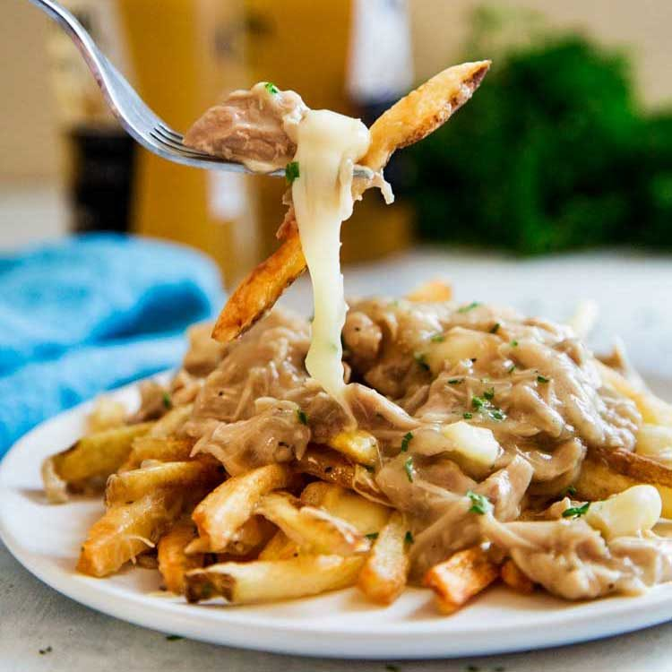

Poutine

Description
Poutine is a Canadian dish that typically consists of french fries topped with cheese
curds and smothered in rich gravy.
Poutine is a simple and comforting dish, and you can also get creative by adding toppings
such as pulled pork, sautéed mushrooms, or caramelized onions if you'd like to experiment
with different variations. Enjoy your homemade poutine!
Ingredients
- Russet potatoes, peeled and cut into fries
- Vegetable oil for frying
- Salt
- Cheese curds
- 1/4 cup of unsalted butter
- 1/4 cup all-purpose flour
- 2 cups beef or chicken broth
- Salt and black pepper
Steps
- Preheat the vegetable oil in a deep fryer or a large, deep pot to 350°F (175°C).
- Fry the potato strips in batches until golden brown and crispy.
- Remove the fries from the oil and drain on paper towels.
- Season the fries with salt while they are still hot.
- In a saucepan over medium heat, melt the butter.
- Add the flour and whisk continuously to form a roux. Cook for a few minutes until
the roux is golden brown.
- Gradually whisk in the broth to avoid lumps.
- Simmer the gravy until it thickens, stirring frequently.
- Season the gravy with salt and black pepper to taste.
- Arrange the hot, crispy fries on a serving plate or dish.
- Sprinkle the cheese curds evenly over the hot fries.
- Pour the hot gravy over the fries and cheese curds, ensuring that the cheese begins to melt.
- The heat from the fries and gravy should cause the cheese curds to melt slightly, creating a gooey,
delicious mixture.
- Serve the poutine immediately, while it's hot and the flavors meld together.